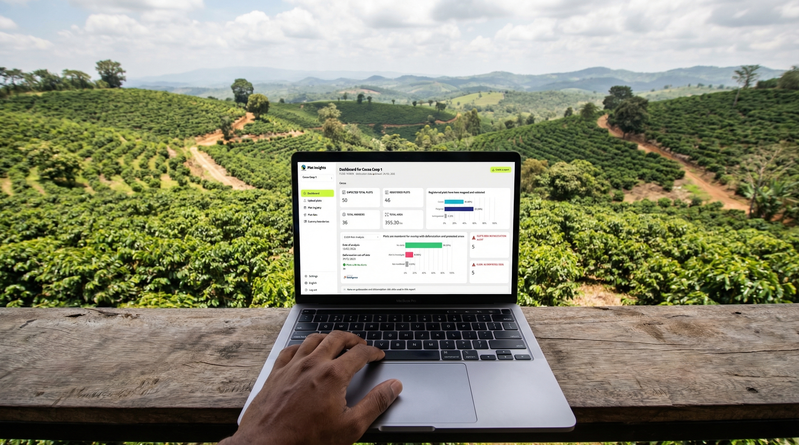
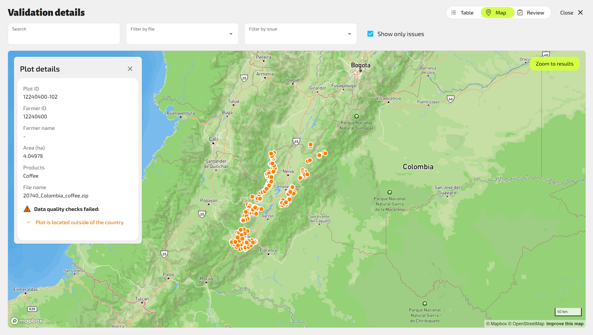
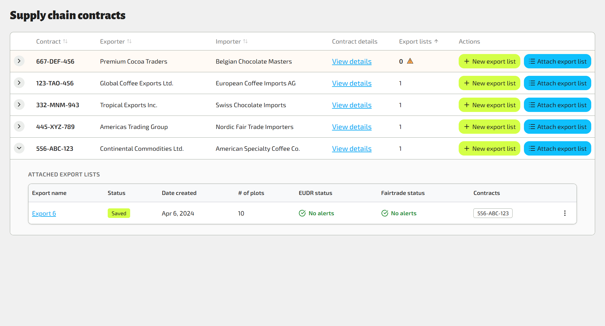
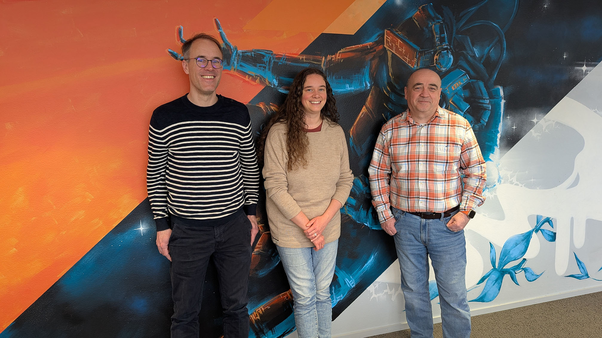

The European Union Deforestation Regulation (EUDR) changed everything. Starting 2025, every kilogram of coffee and cocoa entering the EU must be proven deforestation-free — backed by precise geolocation data from every farm plot.
A complete digital platform for geodata management — from upload to EU compliance

Shapefile, GeoJSON, KML, Excel, CSV - choose the format and let Plot Insights handle the rest
30+ quality checks ensure EUDR compliance and Fairtrade certification
Satellite analysis tracks deforestation risk on every plot using Satelligence services
Consent-driven data sharing with supply chain partners
Producer organizations upload farm plot data in their preferred format


System checks coordinates, detects issues, transforms to correct format
Deforestation risk assessed for each plot using real satellite imagery


Validated data shared with importers for EU submission

By enabling plot-level traceability, importers can comply with EUDR using precisely the subset of plots relevant to their batches — reducing risk exposure while empowering smallholder farmers to participate in global supply chains.
A cloud-native, event-driven architecture designed for scale, security, and resilience
Handles hundreds of thousands of plots across 900 organizations
Role-based access control with consent-driven data sharing
Queue-based processing ensures no data loss
Plot Insights doesn't just help Fairtrade meet EU requirements — it transforms how smallholder farmers participate in global supply chains, enabling transparency, sustainability, and trust at scale.
Digital transformation for a sustainable world
In partnership with